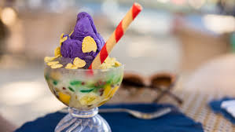

As the temperature rises and summer arrives, nothing beats the heat quite like a refreshing and vibrant dessert. In the Philippines, that perfect summer treat is halo-halo, a delightful mix of crushed ice, sweetened fruits, jellies, and other tasty ingredients, all topped with evaporated milk and scoops of ube ice cream. Let’s dive into the history, ingredients, and variations of halo-halo, the ultimate Filipino dessert experience.
A popular dessert in the Philippines, halo-halo has pre-colonial origins. It is thought that a variety of civilizations, particularly Spanish and Japanese culinary traditions, have impacted the dessert. The delicacy, known as kakigori, is said to have come from Japan and was introduced to the Philippines by Japanese immigrants who lived close to the ice plant in Quinta, Manila. Japanese bean preserves such as mongo, garbanzos, and kidney beans were served with crushed ice and poured in thick syrup; this was eventually indigenously developed into a Filipino variant of Japanese bean preserves known as kakigori.

Halo-halo, which translates to “mix-mix” in English, is a beloved Filipino dessert with roots dating back to the pre-colonial era. It is believed that halo-halo has been influenced by various cultures, including Japanese and Spanish culinary traditions. The dessert’s evolution can be traced back to the Japanese kakigori (shaved ice dessert) and the Spanish granizado. Over time, Filipinos have adapted and enriched the dessert with local ingredients, making it a true reflection of the country’s rich cultural heritage.